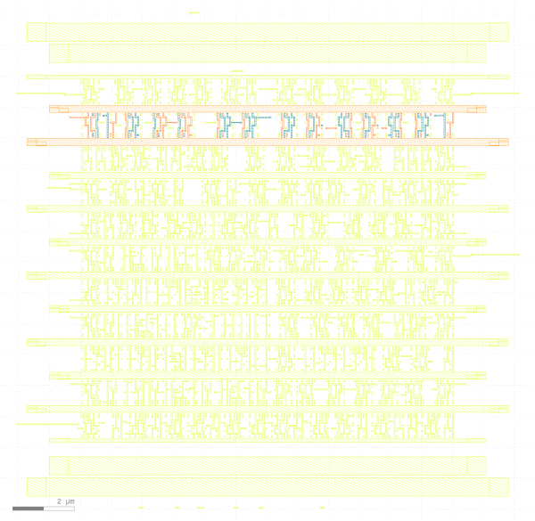

Category by topics
Physical Design
Design for Manufacturing
Testing
Miscellaneous
|
Category by Methods
Optimization Methods
Geometric Deep Learning
GPU-assisted Methods
|
Projects
Global Routing

|
Publication(s)
Wei Li, Rongjian Liang, Anthony Agnesina, Haoyu Yang, Chia-Tung Ho, Anand Rajaram, Haoxing Ren, “DGR: Differentiable Global Routing”, ACM/IEEE Design Automation Conference (DAC), San Francisco, 2024.
(preprint).
Much appreciation for the guidance and assistance provided by Prof. Hu Jiang on this project.
Highlight(s)
A differentiable global router capable of concurrent optimization for millions of nets.
Significantly reduce the number of nets that require maze-routing.
|
Graph Representation for Netlist

|
Publication(s)
Wei Li, Ruben Purdy, Jose Moura, Shawn Blanton, “Characterize the ability of GNNs in attacking logic locking”, ACM/IEEE Workshop on Machine Learning for CAD (MLCAD), Snowbird, Utah, Sep. 11–13, 2023.
(preprint, appendix).
Highlight(s)
Showed that GNNs are always upper bounded by heterogeneous Weisfeiler Lehman test in deciding the netlist
isomorphism, and gave the conditions when GNNs reach the bound.
Second highest reviewer score among all submissions.
|
Global Floorplanning

|
Publication(s)
Wei Li, Fangzhou Wang, Jose Moura, Shawn Blanton, “Global floorplanning via semidefinite programming”, ACM/IEEE Design Automation Conference (DAC), San Francisco, July 9-13, 2023.
(preprint, appendix).
Highlight(s)
A brand new SDP-based method for finding the locations of modules in a chip
The average wirelength is reduced by at least from 3.02% to 20.01%
|
Next-generation Testing Metric

|
Publication(s)
Wei Li, Chris Nigh, Danielle Duvalsaint, Subhasish Mitra, R.D. Blanton, “PEPR: Pseudo-Exhaustive Physical Region Testing”, IEEE International Test Conference (ITC), Sep. 25 - Sep. 30, 2022.
(preprint).
Chris Nigh, Ruben Purdy, Wei Li, Subhasish Mitra, R.D. Blanton, “Faulty Function Extraction for Defective Circuits”, IEEE European Test Symposium (ETS) 2024.
(preprint).
Highlight(s)
Solution to silent data corruption.
Comprehensively analyze both the physical layout and the logic netlist to identify single- or multi-output
sub-circuits.
|
Routing Tree Construction

|
Publication(s)
Wei Li, Yuxiao Qu, Gengjie Chen, Yuzhe Ma, Bei Yu,
“TreeNet: Deep Point Cloud Embedding for Routing Tree Construction”,
IEEE/ACM Asian and South Pacific Design Automation Conference (ASP-DAC), Tokyo, Jan. 18–21, 2021 (Best Paper Award).
(preprint).
Highlight(s)
Formalized special properties of the point cloud for the routing tree construction with theoretical proof.
|
Layout Decomposition
|

|
Publication(s)
Wei Li, Yuzhe Ma, Qi Sun, Zhang Lu, Yibo Lin, Iris Hui-Ru Jiang, Bei Yu, David Z. Pan,
“OpenMPL: An Open Source Layout Decomposer”,
IEEE Transactions on Computer-Aided Design of Integrated Circuits and Systems (TCAD).
(preprint, code).
Wei Li, Jialu Xia, Yuzhe Ma, Jialu Li, Yibo Lin, Bei Yu,
“Adaptive Layout Decomposition with Graph Embedding Neural Networks”,
ACM/IEEE Design Automation Conference (DAC), San Francisco, July 19-23, 2020.
(preprint).
Wei Li, Yuzhe Ma, Qi Sun, Yibo Lin, Iris Hui-Ru Jiang, Bei Yu, David Z. Pan,
“OpenMPL: An Open Source Layout Decomposer”, IEEE International Conference on ASIC (ASICON), Chongqing, China, Oct. 29–Nov. 1, 2019. (Invited Paper)
(preprint)
Highlight(s)
Presented an open-source layout decomposition framework, with efficient implementations of various state-ofthe-art simplification and decomposition algorithms.
Proposed an adaptive workflow for efficient decomposer selection and graph matching using graph embeddings
Designed a Graph Neural Network especially for layout decomposition.
|
|